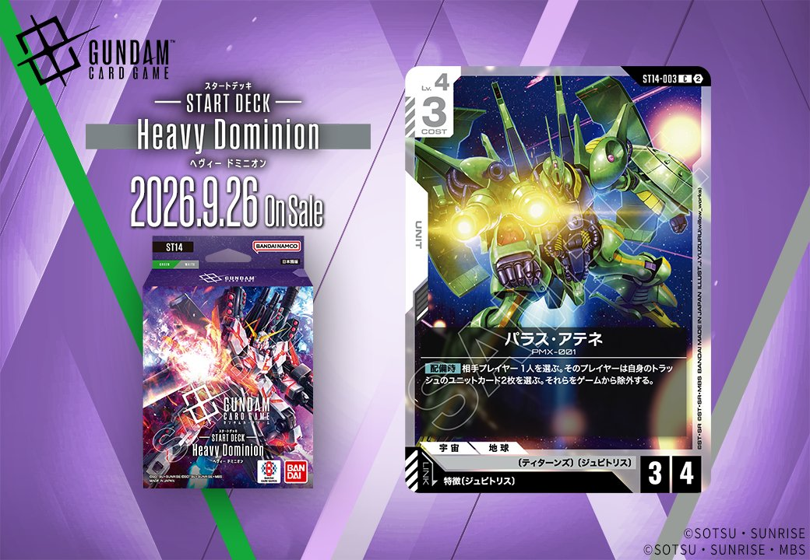

今回は2種類の新カードを紹介します。「泣き虫ボウ」(GD06-121)は白のCOMMANDで、Stardust Trailsに収録され、2026年10月31日発売です。「パラス・アテネ」(ST14-003)は緑のUNITで、ST14に収録され、特徴にジュビトリスを持つPILOTへのリンクを備えており、2026年9月26日に発売されます。

泣き虫ボウ (GD06-121)
| 色 | 白 | タイプ | COMMAND |
| Lv | 3 | コスト | 1 |
| パイロット | ボウ・エイジ（補正 AP+1 / HP+0） 〔ディアナ・カウンター〕、〔ムーンレイス〕 | ||
効果: 【アクション】相手のユニット1つを選ぶ。このバトル中、それをAP-2する。それが《高機動》を持つなら、かわりにAP-6する。
泣き虫ボウ(GD06-121)は、COST1のコマンドで、【アクション】として相手ユニット1つをこのバトル中AP-2、対象が《高機動》持ちならAP-6する除去補助。低コストでバトル中のAP低下を狙え、相手の攻めをいなす用途に向く。 キラ・ヤマト(ST04-010)の【アタック時】AP-2と効果の方向性が近く、AP低下手段を重ねて戦闘を有利にする運用が考えられる。《高機動》はブロッカー発動を無効化する性質を持つため、その持ち主に対しては通常の3倍のAP-6が刺さる点が特徴的。

パラス・アテネ (ST14-003)
| 色 | 緑 | タイプ | UNIT |
| Lv | 4 | コスト | 3 |
| AP | 3 | HP | 4 |
| 特徴 | 〔ティターンズ〕、〔ジュビトリス〕 | ||
| リンク条件 | 特徴にジュビトリスを持つPILOT | ||
効果: 【配備時】相手プレイヤー1人を選ぶ。そのプレイヤーは自身のトラッシュのユニットカード2枚を選ぶ。それらをゲームから除外する。
パラス・アテネ（ST14-003）はコスト3・AP3/HP4の緑ユニットで、【配備時】に相手のトラッシュからユニットカード2枚をゲームから除外できる点が特徴です。トラッシュを利用する相手への妨害効果ですが、対象がトラッシュに2枚以上ないと十分に機能しないため、中盤以降に価値が出やすい効果と言えます。 特徴に〔ジュビトリス〕を持つパイロットとリンクでき、2026-09-26発売のST14での運用が想定されます。


関連カード
-
 溢れる慈愛(GD01-118)白系デッキ内採用率38.3% (1856デッキ)
溢れる慈愛(GD01-118)白系デッキ内採用率38.3% (1856デッキ) -
 ガンダム・ルブリス(GD01-086)白系デッキ内採用率32.6% (1579デッキ)
ガンダム・ルブリス(GD01-086)白系デッキ内採用率32.6% (1579デッキ) -
 エールストライクガンダム(ST04-001)白系デッキ内採用率30.8% (1494デッキ)
エールストライクガンダム(ST04-001)白系デッキ内採用率30.8% (1494デッキ) -
 キラ・ヤマト(ST04-010)白系デッキ内採用率30.5% (1476デッキ)
キラ・ヤマト(ST04-010)白系デッキ内採用率30.5% (1476デッキ) -
 リック・ディアス(GD02-079)白系デッキ内採用率26.4% (1279デッキ)
リック・ディアス(GD02-079)白系デッキ内採用率26.4% (1279デッキ) -
 ザクⅡ(ST03-008)緑系デッキ内採用率19.7% (952デッキ)
ザクⅡ(ST03-008)緑系デッキ内採用率19.7% (952デッキ) -
 リック・ドム(GD01-030)緑系デッキ内採用率18.8% (910デッキ)
リック・ドム(GD01-030)緑系デッキ内採用率18.8% (910デッキ) -
 ザクⅡ（シャア・アズナブル機）(ST03-006)緑系デッキ内採用率12.1% (584デッキ)
ザクⅡ（シャア・アズナブル機）(ST03-006)緑系デッキ内採用率12.1% (584デッキ) -
 ウイングガンダムゼロ(GD01-024)緑系デッキ内採用率11.1% (536デッキ)
ウイングガンダムゼロ(GD01-024)緑系デッキ内採用率11.1% (536デッキ) -
 ウイングガンダム(ST02-001)緑系デッキ内採用率10.8% (523デッキ)
ウイングガンダム(ST02-001)緑系デッキ内採用率10.8% (523デッキ)